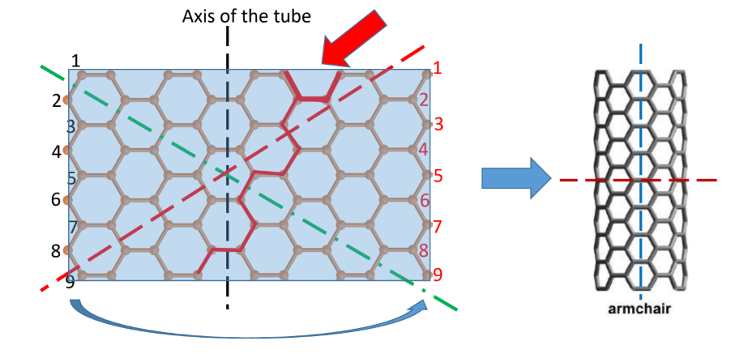
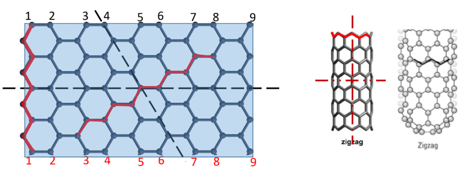

Discovered in 1991 by Japanese scientist Sumio Ijima, a Carbon Nanotube is essentially a single sheet of graphene rolled into a tube, with both ends capped by fullerene hemispheres.
They are classified into Single-Walled (SWNT) and Multi-Walled (MWNT) tubes. In MWNTs, the inter-tube distance is ~3.4 Å (similar to the interlayer separation of graphite).
Chirality & (n,m) Notation
The properties of a CNT depend on how the sheet is rolled, defined by its Chiral Vector: C = n(a1) + m(a2). This determines the twisting angle (θ) of the tube:
- Armchair Tubes: Occur when
n = m. The chiral angle is exactly θ = 30°.
- Zigzag Tubes: Occur when
n = 0 (or m = 0). The chiral angle is exactly θ = 0°.
- Chiral Tubes: Occur when n ≠ m. The chiral angle is between 0° and 30°.


Diameter Formula: D = (a / π) √(n2 + m2 + nm), where 'a' is the lattice constant of graphene.
Properties of CNTs
- Electrical: Depends entirely on chirality! If
n = m, the tube is Metallic. If n - m = 3q, it is a small band gap semiconductor. Otherwise, it is a large band gap semiconductor.
- Mechanical: Young's Modulus is 0.9 – 1.1 TPa with a max strain of 10% (much higher than structural metals).
- Thermal: Extreme thermal conductivity axially (~3000 W/m·K) due to strong C-C covalent bonds, but they act as thermal insulators in the radial direction.
Watch the video below to see how 2D Graphene rolls into 3D Carbon Nanotubes:
Practice Exercises
Test your knowledge on Carbon Nanotubes.
1. What is the approximate inter-tube distance in a Multi-Walled Carbon Nanotube (MWNT)?
A) ~1.0 Å
B) ~3.4 Å
C) ~10.2 Å
2. What defines the (n,m) notation of an "Armchair" carbon nanotube?
A) n = 0
B) n = m
C) n ≠ m
3. What is the specific chiral angle (θ) of a Zigzag nanotube?
A) 0°
B) 15°
C) 30°
4. What happens to the electrical properties of a CNT if it has an Armchair structure (n = m)?
A) It behaves as a metal
B) It behaves as a large band gap semiconductor
C) It becomes a perfect electrical insulator
5. How does a Carbon Nanotube conduct heat?
A) It acts as a thermal insulator in all directions
B) It acts as a thermal conductor in all directions
C) It is a thermal conductor axially, but a thermal insulator radially